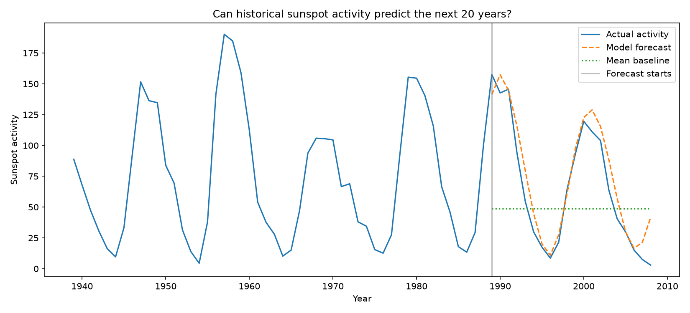

Can historical sunspot activity predict the next 20 years?
This experiment compares an autoregressive forecast with a mean baseline on the final 20 years of the dataset.

Methods and limitations
The model uses the previous 11 annual observations. The final 20 years are held out for evaluation. This is a historical test period, not a prediction of current or future sunspot activity.